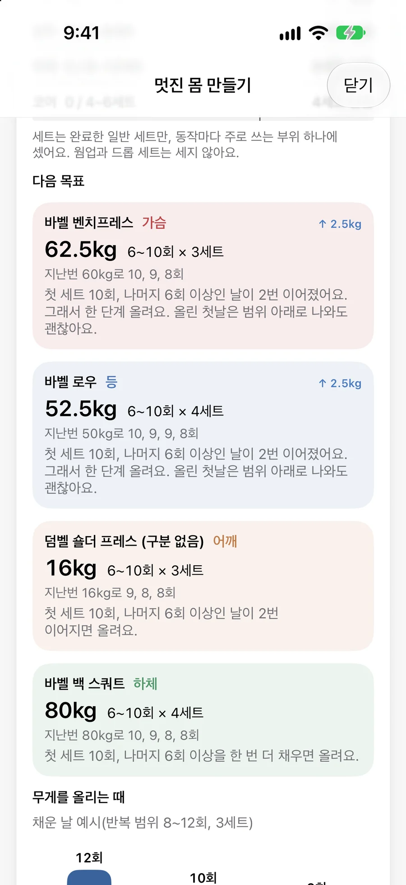
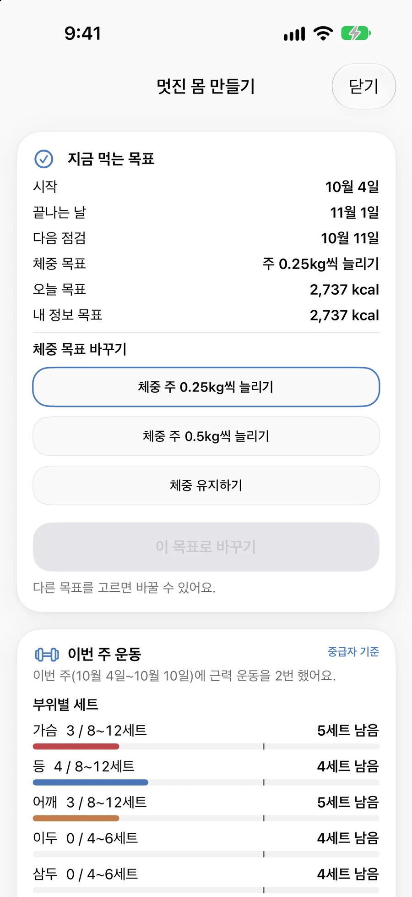
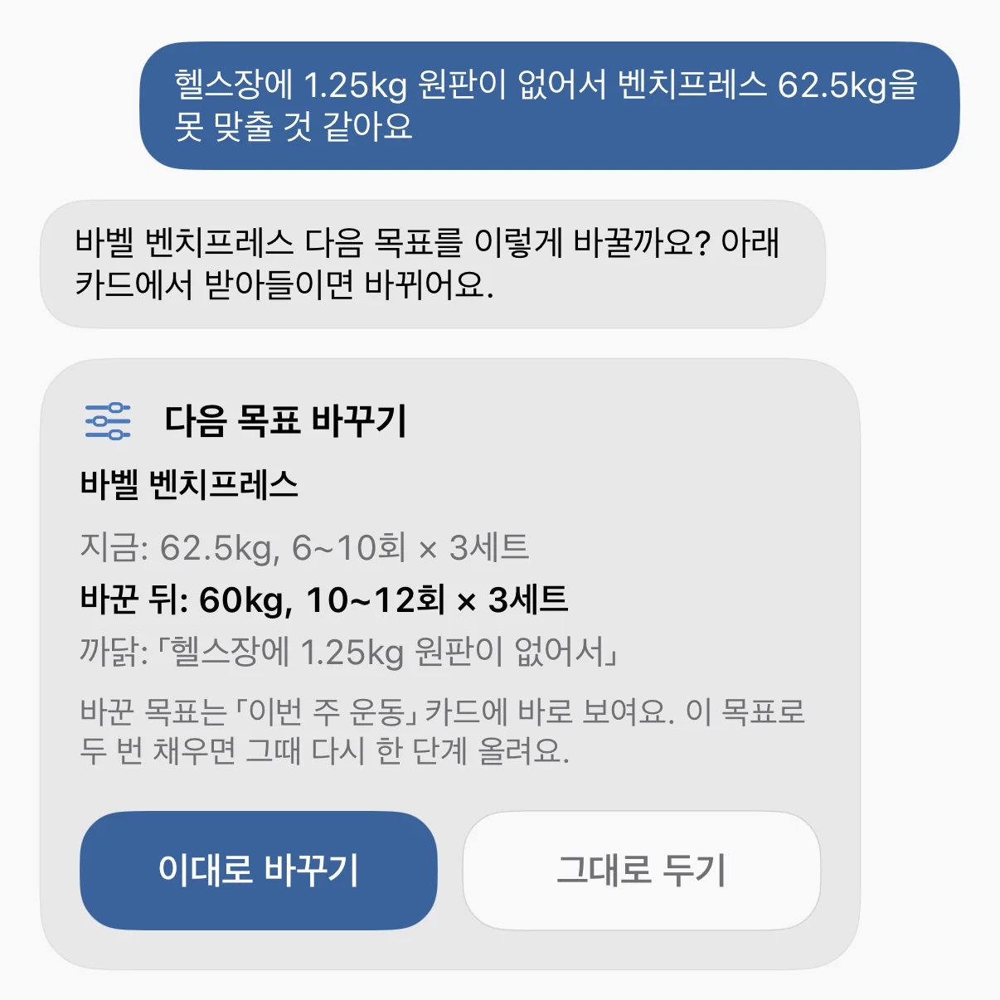

1지금 상태 보기
운동, 식단, 잠, 체중을 한 화면에서
멋진 몸 만들기에서는 최근 7일의 단백질, 부위별 세트, 잠, 체중 흐름을 한 카드로 묶어 보여 줘요.
- Apple 건강 앱의 러닝, 걷기, 수면 기록을 불러와요.

운동, 식단, 잠 기록을 함께 보고, 다음에 할 일을 구체적으로 정해 드려요.
iPhone 전용 앱이에요. 진단이나 치료는 하지 않아요.
페이지 속 앱 화면에는 예시 기록을 넣었어요.

PT 선생님이 하듯이, 해 본 결과를 함께 점검해 다음 계획을 고쳐요.
멋진 몸 만들기에서는 최근 7일의 단백질, 부위별 세트, 잠, 체중 흐름을 한 카드로 묶어 보여 줘요.
근력 운동이라면 동작마다 다음 무게와 반복 범위, 세트 수를 알려 줘요. 기록이 화면에 적힌 기준을 채우면 다음 목표를 한 단계 올리고, 왜 올리는지도 같이 적어요.

식사 사진을 고르거나 찍으면 음식과 양, 열량, 탄수화물, 단백질, 지방을 어림해 드려요. AI가 추정한 값이라 저장하기 전에 항목마다 직접 고칠 수 있어요.

점검일에 짧은 질문에 골라서 답하면, 앱이 그 답을 기록과 함께 보고 바꿔 볼 한 가지가 있을 때 제안해요. 계획을 바꾸자는 제안은 직접 수락해야 바뀌어요.

코칭 탭에서 바꾸고 싶은 것 하나를 고르면, 정해진 점검일마다 기록을 보며 계획을 조정해요.

내 정보로 하루 열량 목표를 정하고, 점검하며 조정해요.
하루 열량은 조금만 줄이고 단백질을 넉넉히 잡아요.
동작마다 다음 무게와 반복 범위를 짚어 줘요.
최근 기록에서 고른 종목의 무게와 반복을 4주 동안 올려 가요.
한 번에 더 길게, 주간 총거리 늘리기, 같은 거리 더 빠르게 중 하나를 골라요.
쉬지 않고 달리는 시간을 단계별로 늘려 가요.
바꾸고 싶은 것을 고르면, 이번에 해 볼 행동 하나를 이유와 함께 알려 줘요.
4주는 습관과 기록을 잡는 기간이에요. 이 기간 안의 결과는 약속하지 않아요.
기록하는 화면, 계획을 세우는 화면, 대화하는 화면이 같은 기록을 보고 움직여요.
지난 운동, 식단, 잠 기록을 찾아보며 대화해요. 목표나 계획을 바꾸자는 제안은 확인 카드로 오고, 누르기 전에는 바뀌지 않아요.

운동 수준과 주 횟수, 최근 4주 기록으로 다음 주 루틴을 짜고, 왜 그렇게 짰는지 함께 보여 줘요. 플랜에는 직접 눌러서 넣어요.

Apple 건강 앱의 러닝과 걷기를 불러오고, GPS로도 기록해요.
수면 기록과 잠드는 시각의 리듬을 함께 봐요.
세트마다 무게와 횟수를 남기고, 휴식 타이머는 잠금 화면에서도 보여요.
울릴 요일을 고르고, 알람 권한을 허용하면 무음 모드에서도 울려요.
2주 기록을 정리하고, 다음 2주 운동과 식단 계획까지 받아요.
마신 카페인이 누울 시각에 몸에 얼마나 남을지 어림해요.
운동 중에 지금 할 세트와 휴식 남은 시간을 손목에서 봐요.
위젯과 제어 센터로 식단 기록과 AI 코치를 바로 열어요.
몸이 갑자기 아프거나 위급하면 119나 가까운 의료기관에 연락해 주세요.
코칭 카드의 숫자에는 「5일 기록의 평균」처럼 적어요.
AI는 그 숫자와 기록으로 설명과 제안을 써요.
AI 코치가 낸 제안도 직접 눌러야 적용돼요.
지금은 함께 써 볼 분들과 앱을 다듬고 있어요. 써 보고 싶거나 궁금한 점이 있으면 편하게 메일을 보내 주세요.
iOS 26.2 이상 iPhone에서 쓸 수 있어요.